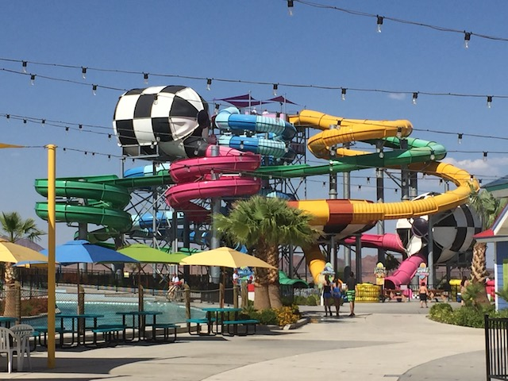
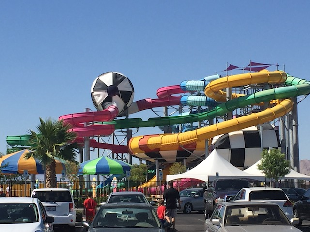

| |
Surf-A-Go-Go Photos

We're here at Cowabunga Bay Las Vegas, where we'll be reveiwing their newest waterslide. Surf-A-Go-Go. This is the parks tantrum water slide, made by Polin Waterslides. And....this is definately an interesting water slide. OK. Not so much anymore. These types of slides have been becoming a lot more popular lately. Which is cool. Tantrum slides are fun. Get in your tube, and let's go. Head down a small dip, around a downward helix. Hmm. Fun so far. Go through a tunnel with bright colored rings aand BAM!!! Into the first tantrum. These things are a lot of fun. Basically tiny little tornado sections. A little bit of swining action before popping back out and going down a downward helix. Hey, gaining more speed. That's fun. Go through a little bit of straight track before going through another turn and into another tantrum. Yeah. I really am a fan of these types of rides. Go down another downward helix, only this time, indosors. And SPLASH!!! Out into the pool. It may not be so unique anymore, but regardless, it's still a lot of fun. Big fan of tantrum slides.
7/10
Location: Cowabunga Bay Las Vegas
Opened: 2014
Built by: Polin Waterslides
Last Ridden: June 5, 2017
Surf-A-Go-Go Photos

Home
|